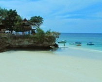

-
 Tomini Bay "Sulawesi"
Tomini Bay "Sulawesi"
Tomini Bay terletak di Sulawesi Utara. Karena lokasinya yang tak jauh dari garis ekuator atau khatulistiwa, pantai ini menjadi tempat yang tepat untuk menikmati waktu bersantai dengan cara berjemur.
-
Tanjung Layar Beach
Tanjung Layar Beach "Pantai Tanjung Layar" terletak di desa Sawarna wilayah Banten, kecamatan Bayah. Pengunjung dapat menikmati spot sunset dan sunrise di daerah pantai memanjang dengan hamparan pasir putih.
-

Tanjung Bira
Tanjung Bira adalah sebuah pantai alami yang terletak di Sulawesi Selatan. Pantai ini terkenal sebagai pantai berpasir seputih tepung.
-
Pink Beach Komodo-Island
Pantai ini memiliki pasir pantai berwarna pink. Warna pink ini konon berasal dari serpihan karang dan biota lain yang terbawa arus ke daratan dan bercampur dengan pasir pantai.
Best BWI Beach
Teluk Hijau
Pantai Teluk Hijau, tertetak pada sebelah selatan wilayah kabupaten Banyuwangi, Disebut teluk hijau karena air lautnya berbeda dengan warna air laut pada umumnya yang berwarna biru, Warna pasir pada teluk hijau putih dan halus sehingga begitu mudah menempel dikulit.
Lainnya
Anda suka pantai ? Atau ingin travelling di sebuah pantai namun anda belum tau harus kemana?, temukan disini ! Website tentang pantai - pantai nan indah di indonesia, jadi kamu ga perlu khawatir dan bingung mencari tujuan pantai yang kamu suka ! Banyak info tentang pantai - pantai di dalam negeri. Temukan wisata pantai yang paling menarik yang ada di Indonesia. Indonesia juga punya pantai - pantai indah lho ! Ngapain harus ke luar negeri ?